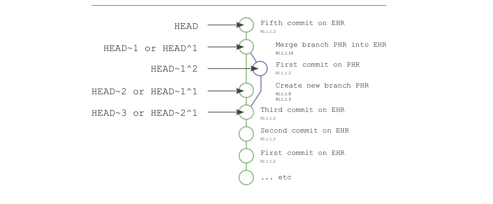
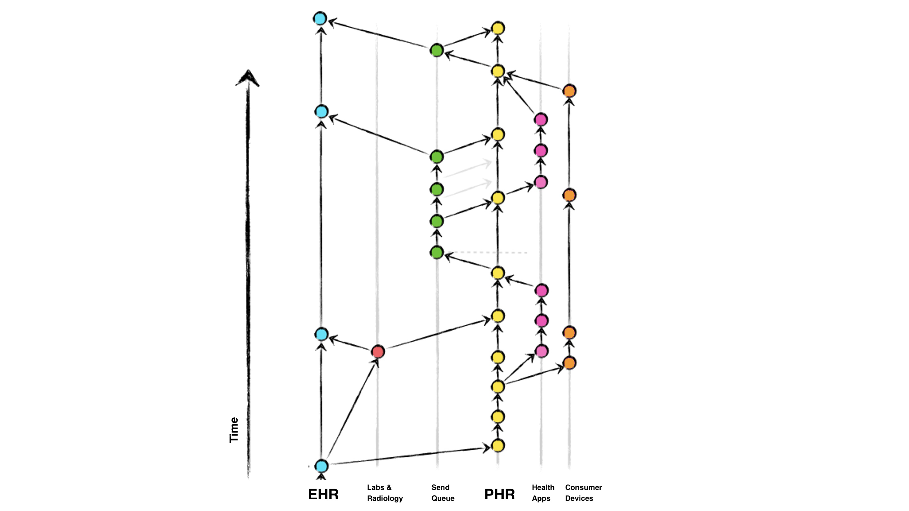

Personal Health Records
1.0.0-ballot - ballot

Personal Health Records
1.0.0-ballot - ballot

Personal Health Records - Local Development build (v1.0.0-ballot) built by the FHIR (HL7® FHIR® Standard) Build Tools. See the Directory of published versions
The core idea has been to establish a robust mechanism for bidirectional synchronization of electronic health records (EHRs) between clinical systems, ancillary services, personal health record (PHR) platforms, and the patient's own health apps and devices. By leveraging standards like FHIR and NDJSON, this PHR approach enables exchange of structured medical data.
Note: the following is a first-draft of this content, and is subject to changes and re-writes.
However, once we have structured data, we need to consider the details of how we construct longitudinal records from multiple sources. In doing so, we are inspired by both the SPHR-FM Record Lifecycle specifications and the Git utility (which is a distributed version control system that allows multiple users to collaborate on a project while maintaining a complete history of changes). In Git, each record is added to a "repository" and can be "committed" with a timestamp and a message (RI.1.1.2). The repository can be "cloned" to create a local copy (RI.1.1.9), and changes can be "pulled" from the repository and "pushed" or merged into it (RI.1.1.19). We would draw the reader's attention to how these operations are similar to the SPHR-FM Record Lifecycle operations. By aligning these two approaches, we can leverage the power of both acylic graphs and the SPHR-FM Record Lifecycle specifications to create a robust mechanism for managing longitudinal records.

Importantly, this architecture suggests a formal record-keeping mechanism by which we can manage, index, update,merge, and export entire medical histories from a system. This formal mechanism is known as a Directed Acylic Graphs (DAGs), which are designed to ensure data integrity and consistency. Each record is assigned a unique SHA-256 hash, and the hash of each record includes the hash of the previous record in the chain. This creates a tamper-evident, immutable record of the patient's health data.
Note: We envision these atomic updates as eventually including the Patient Data Receipt standard.
This is a key aspect of the PHR approach, as it allows for both patient-initiated data sharing and provider-initiated data retrieval.

Key aspects of the above diagram include:
This approach offers several benefits: it empowers patients to be active participants in their healthcare, enables real-time data sharing between providers and ancillary services, and creates a comprehensive, longitudinal view of the patient's health history. The use of standardized data formats and versioning principles helps address challenges around data silos, fragmentation, and lack of interoperability that often plague traditional healthcare IT systems.
Directed acyclic graph interpretation of Personal Health Records allow a number of architectural features that implementors are encouraged to consider:
Both EHR and PHR systems act as legally recognized repositories of medical data for patients. It is the duty of clinicians and hospital administrators to keep these records up to date and accurate, to the fullest extent possible. These repositories are accessible to patients via the 21st Century Cures Act.
Each connected system (e.g., labs, radiology, PHR, patient apps) manages it's own records about the patient, and is treated as a "feature" branch, diverging from the main EHR or PHR branch.
When a system needs to sync data, it performs a FHIR based GET operation from the other system to fetch a specific patient's records. The system then makes its own updates in its internal record keeping system. In the case of a PHR, typically implemented as a single-user system, the patient will be the user of the application.
When ready to push changes back to the EHR or other system, the system performs a POST operation, which initiates a record update and merge back into the main EHR branch. The EHR system utilizes it's internal merge strategies and conflict resolution algorithms to ensure data integrity during the merging process.
Each commit to the EHR's main branch represents a new version of the patient's medical data, with associated metadata (author, timestamp, change description, etc.). In the case of a PHR, the author will be the patient owner.
Connected systems can use log and diff style commands to review the history of changes and understand the evolution of the patient's health records over time.
When a new system (e.g., a patient's PHR) connects to the framework, it performs a clone of the EHR's main repository to obtain a local copy of the patient's full medical history.
Subsequent updates are handled through the standard pull and push operations, ensuring that all connected systems maintain a consistent view of the patient's data.
When issues arise, the framework utilizes revert and reset commands to rollback changes or restore the patient's medical data to a previous known-good state. This versioning and commit history provide a reliable audit trail and enables recovery from data corruption or accidental modifications.
This architecture allows connected systems like PHRs to maintain local "feature" branches and perform occasional pull and sync operations with the central EHR repository.
IG © 2022+ HL7 International / Patient Empowerment. Package hl7.fhir.uv.phr#1.0.0-ballot based on FHIR 4.0.1. Generated 2024-12-18
Links: Table of Contents |
QA Report
| Version History |
 |
Propose a change
|
Propose a change